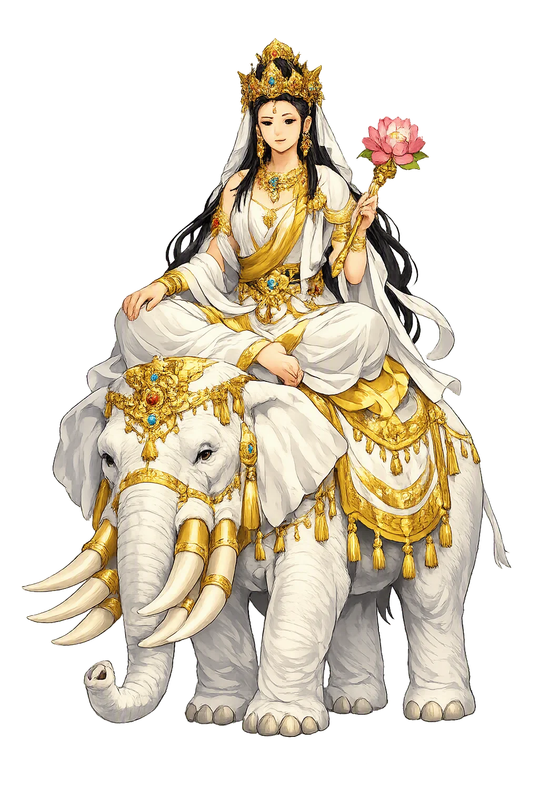
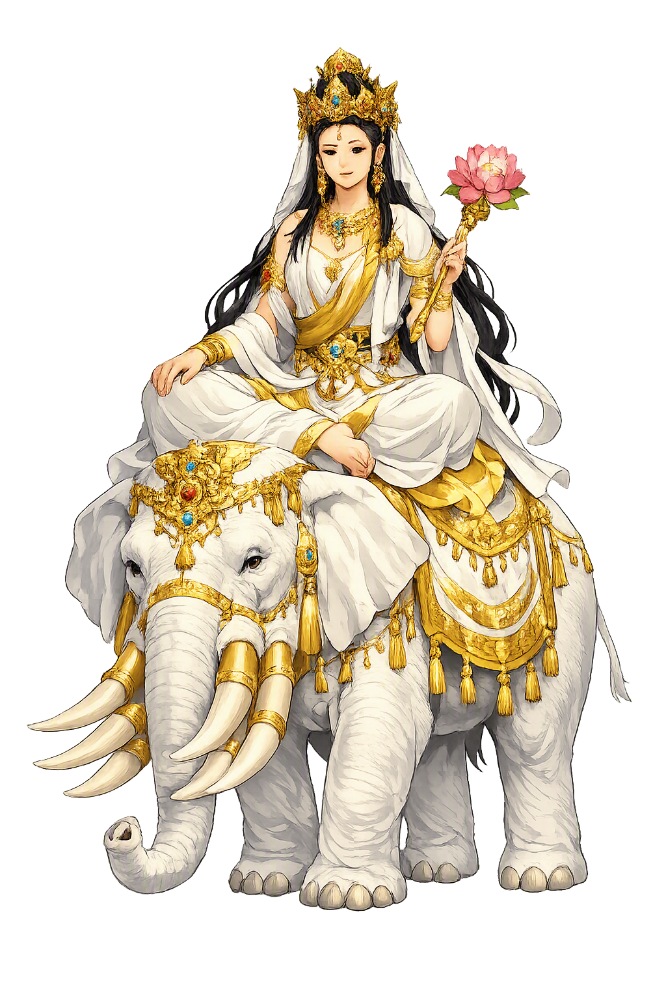

The Living Myth
Universal Good, Practice · 'Universal Beneficence' — the Bodhisattva of practice, rider of the white elephant

Stories of Samantabhadra
Samantabhadra's mythology is the biography of goodness as a discipline. He closes the two greatest Mahāyāna sūtras with vows rather than visions, becomes Tibet's primordial Buddha without ever leaving his elephant, and turns a Sichuan peak into the most walked bodhimaṇḍa in China. His stories are quiet — and deliberately so.
The Avataṃsaka Sūtra closes with his testament, the Bhadracarī-praṇidhāna or Vows of Good Conduct: homage to all buddhas as numerous as atoms, praise of their virtues, offerings as vast as space, confession of faults, rejoicing in others' merit, requesting the wheel of Dharma be turned, beseeching buddhas not to pass into nirvāṇa, constant imitation of their deeds, dedication of all merit, and its transfer to all beings — whatever good I have done, may all beings share it. The prayer is appended to the great sūtra in its Chinese recensions and has never left the tradition's daily life: Tibetan monasteries chant it at the close of every session, and East Asian liturgy still folds its verses into repentance rites. Ten lines carry the entire Mahāyāna practice — the myth's point is that goodness, fully articulated, turns out to be this short and this inexhaustible.
The Lotus Sūtra ends not with the Buddha but with a visitor. Its twenty-eighth chapter brings Samantabhadra from the eastern land, riding a great white elephant with six tusks, each tusk bearing seven lotuses, each lotus a radiant Buddha, surrounded by an entourage streaming across the sky — and he vows before the assembly to protect anyone who keeps, reads, or teaches the Lotus in the latter age, sending his fragrant elephant and his retinue to guard them, even laying his hand on their heads in blessing. To forgetful minds he grants dhāraṇīs — spells of retention — so the sūtra survives its readers. The closing chapter is the sūtra handing itself to practice: wisdom (the Lotus's teaching) sealed by goodness (the bodhisattva who promises to carry it). A scripture that ends in a vow is telling you how it intends to be read — not admired, but kept.
In Tibet's oldest school, the Nyingma, Samantabhadra rose from bodhisattva to ground of being. Kun tu bzang po — the All-Good One — is the dharmakāya itself, the primordial Buddha who never entered samsara because there was nothing to enter: blue, naked, without ornaments of any kind, seated in equipoise with his consort Kun tu bzang mo in the gesture of the mind's own nature. The Kunjed Gyalpo, the 'All-Creating King' tantra, gives him the leading voice: the whole of reality, the tantra says, is the display of his mind, and awakening is not something attained but something remembered. Doctrinally this is a world away from the elephant-riding vow-maker of the Lotus Sūtra — yet the tradition holds both without strain, for the myth's meaning is the same in both registers: goodness is not a virtue acquired but the original condition nothing can add to or subtract from.
China's geography made him its most walked mountain. Pǔxián's bodhimaṇḍa is Éméi shān, the lofty 'Eyebrow' peak of Sichuan — one of the four sacred Buddhist mountains, where the founding legend (recorded in the mountain's gazetteers) tells of a white elephant seen on the heights in the Eastern Han, and of a temple raised where it stood. The mountain's great relic is the Wannian Temple bronze: an elephant bearing Pǔxián, cast in 980 CE under the Song emperor Taizu — over seven meters tall and some sixty-two tonnes, still standing where its mould was poured. Pilgrims climbing the 'seas of clouds' to the Golden Summit report the bodhisattva's apparition in the mountain's famous halo of light, his elephant's outline swimming in the spectral sun. The myth gives practice a landscape you can climb: vows at the bottom, good at the top, and the mountain itself unable to tell the difference.
Universal Good
Samantabhadra is the bodhisattva of practice: if Mañjuśrī wields the sword of wisdom, Samantabhadra is the goodness that actually walks — his ten great vows (homage, offering, confession, rejoicing, dedication...) are the Mahāyāna's complete curriculum of the heart, recited daily from Wutai to Lhasa.
Homage, praise, offering, confession, rejoicing, requesting the teaching, beseeching buddhas to remain, imitation, dedication, transfer — the Avataṃsaka's whole practice in ten lines.
His mount, fragrant and steadfast: practice that carries all beings without hurry or display.
The Bhadracarī-praṇidhāna — 'Vows of Good Conduct' — closing the Avataṃsaka and opening every Tibetan monastery's day.
Pǔxián's earthly seat, one of China's four sacred Buddhist mountains — where his bronze elephant has stood since 980 CE.
From the original script to the living URL
समन्तभद्र
The name in its original Buddhist form. Samantabhadra (समन्तभद्र) is attested in the source tradition — “'Universal Beneficence' — the Bodhisattva of practice, rider of the white elephant”. Its original diacritics and script distinctions carry the full phonetic and orthographic weight of the source tradition.
samantabhadra
The plain samantabhadra form is identical to the Unicode restoration. Because this name is already written in Latin letters, no diacritics, stress, or script information were lost — only capitalization differs.
Samantabhadra
The Unicode restoration does not need to recover lost marks for Samantabhadra. Its value is canonical spelling and consistent cataloguing, not the reconstruction of erased orthography. The domain is readable as-is to both DNS and humanity.
Samantabhadra.com
This restoration is written entirely in ASCII letters — no Punycode encoding stands between Samantabhadra and the DNS. The domain reads identically to machines and to human eyes.
Owned, ideal, and ASCII forms of Samantabhadra
Samantabhadra
Restores समन्तभद्र. The full Unicode restoration. samantabhadra.com is not in the PuniCodex collection — it is watched for release; if it drops, this temple upgrades to an owned flagship.
How Samantabhadra was spoken
How Samantabhadra travels from ancient script to the modern URL
Samantabhadra is the answer to the suspicion that the Mahāyāna is all vision and no work. The Avataṃsaka gives us a cosmos of jeweled interpenetration — and then, in its final pages, hands the whole thing to a bodhisattva on an elephant and ten vows. The placement is the teaching: contemplation without practice is a postcard; practice is the journey the postcard describes. His vows are famously unglamorous — homage, praise, offering, confession, rejoicing — none of them beyond a beginner, all of them infinite. That combination is the point: a practice anyone can start and no one can finish is precisely the shape of a life. He is also the bodhisattva of the collective: every vow ends in dedication, the merit poured back into the common account. If Mañjuśrī asks what you know, Samantabhadra asks what you did with it — and his elephant does not hurry, because goodness, unlike insight, is allowed to take forever.
Enter Extended Lore